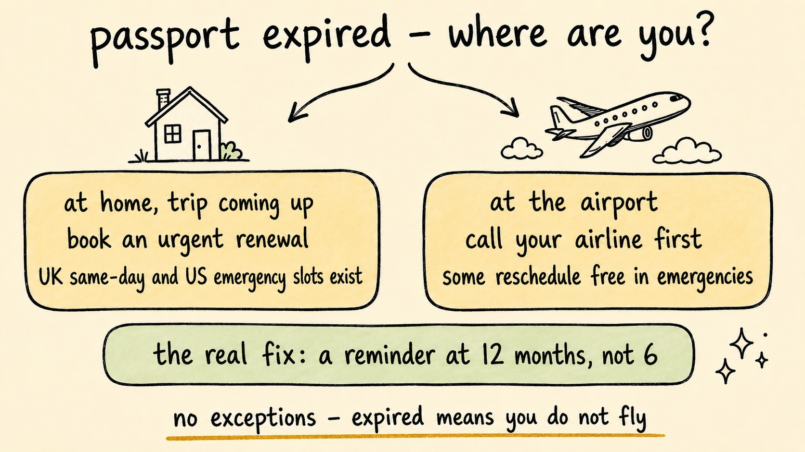

Passport Expired? Here's Exactly What to Do (Step by Step)
Travel Document Vault

Key Takeaways
- There are two distinct scenarios: discovering your passport is expired at home before a trip, and discovering it at the airport. The steps are different for each.
- You cannot fly internationally on an expired passport. No exceptions.
- In the UK, an expedited Premium passport service exists for genuine emergencies - bookable at gov.uk. In the US, emergency appointments are available through the State Department for urgent travel.
- At the airport, contact your airline first - some will reschedule without fees for genuine document emergencies.
- The fix going forward is a 12-month expiry reminder, not a 6-month one. That gives you enough time to renew on standard processing.
- Expiry is not the only passport problem that gets travellers turned away. Damage, name mismatches, missing signatures, and insufficient remaining validity at your destination all cause the same result.
Discovering your passport is expired is one of those moments where time suddenly becomes very real. Whether you spotted it three months before a trip or you are standing at the airport check-in desk right now, what happens next depends entirely on which situation you are in.

Scenario A: You Discovered It at Home, with a Trip Coming Up
This situation is recoverable - but how recoverable depends on how much time you have before you travel.
How urgently you need to act determines what to do:
- Plenty of time before travel: apply for standard renewal online through your passport authority's website - GOV.UK for the UK, travel.state.gov for the US.
- Trip coming up sooner: apply immediately and pay for expedited processing. Both the UK and the US offer a faster paid service online, and each publishes its current turnaround.
- Trip getting close: call your passport authority directly rather than relying on the website alone - the HM Passport Office adviceline in the UK, or the US National Passport Information Center in the US.
- Trip is imminent: ask about an emergency appointment and bring proof of your travel dates. The UK offers a same-day Premium service at designated passport offices, and the US offers appointments at regional passport agencies.
All major passport authorities hold back emergency appointment slots that are not visible online. If your timeline is tight, call rather than relying only on the website.
Set the reminder now so this never happens again - Travel Document Vault notifies you 6, 3, and 1 month before every passport in your household expires. Download on the App Store.
Scenario B: You Discovered It at the Airport
This scenario happens more often than people expect, and the steps are not obvious when you are under pressure.
Step 1: Stay calm and move away from the queue. You are not boarding this flight, and the sooner you accept that reality, the sooner you can start working on the solution.
Step 2: Go to the airline desk immediately. Do not leave the airport - speak to the airline directly and explain the situation. Some airlines will reschedule without a change fee for genuine document emergencies - not all, but it is worth asking. Get the answer in writing if they agree.
Step 3: Check whether domestic travel is possible. An expired passport may still be accepted as ID for domestic flights in some countries, though this is not guaranteed. If your final destination is reachable domestically from a closer city, this might be an option while you sort the passport. British travellers should read what an expired passport means for UK travel, since the rules differ by route.
Step 4: Contact your passport authority by phone. Explain your situation. In the UK, call the HM Passport Office adviceline and ask for the earliest available appointment at the nearest passport office. In the US, call the US National Passport Information Center and ask about emergency appointments at the nearest regional passport agency. Ask specifically about emergency options, since faster appointments are often not listed on the website.
Step 5: Book accommodation near the passport office. If you get an appointment for the following day, you need somewhere to stay. Keep receipts - if you have travel insurance, some of these costs may be claimable.
Step 6: Contact your travel insurer. A passport discovered expired at the airport may be covered under travel insurance depending on your policy. Call to check rather than assuming either way.
Travel Document Vault reminds you months before a passport expires, so the version of this you read about never happens to you. Download on the App Store and Google Play.
Other Passport Problems That Get Travellers Turned Away
Expiry is the most common reason a passport fails at the airport, but other problems cause the same result. What makes them easier to overlook is that unlike expiry dates, they don't come with a visible countdown warning.
1. A damaged passport
Visible damage alone is enough to get you turned away. Airlines and border officers can refuse entry if there are torn or detached pages, water damage that obscures text or the photo, or anything preventing the chip from scanning. The bar is subjective, which makes it unpredictable: a passport that works fine at one border may be rejected at another.
Children's passports are particularly vulnerable. Pen marks on the photo page, bent covers, or a page pulled loose during travel are enough to cause problems. A replacement means a fresh application, and a new photo that will actually be accepted. Check every passport in your household before you travel, not just the night before.
2. A name that does not match your ticket
A name mismatch between your passport and boarding pass will get you turned away. It catches people after a legal name change - marriage, divorce, or formal deed change - where the passport hasn't been updated yet. It also catches booking errors: a middle name on the ticket but absent from the passport, or vice versa.
Even small variations like a missing middle initial or a transposed letter can sometimes be resolved by the airline staff, but you can't count on it. Make sure every name on every ticket matches every name in every passport exactly, including children's names.
3. An unsigned passport
Most passports have a signature panel. Some countries - including the United States - require the passport to be signed before it is considered valid for travel. An unsigned passport can be refused at the border. This is most commonly a problem with passports issued to children who were too young to sign, or with brand-new passports that the holder forgot to sign before travelling. Check the signature panel before you leave home.
4. Insufficient validity for your destination
Your passport's expiry date is not the only threshold that matters. Many countries require it to remain valid for a minimum period beyond your arrival date - typically six months, though some require only three months or simply the duration of your stay. Arriving with a technically valid passport that doesn't meet this requirement will get you turned away at the border, just like an expired passport would.
This rule is not applied consistently across all destinations, which makes it easy to miss. The six-month passport rule explains which countries enforce it and which do not, with a worked example of how it is calculated.
5. Not checking visa requirements before you travel
Visa and electronic travel authorisation (ETA) requirements change often and vary by nationality, destination, and purpose of travel. Arriving without the correct entry permission - assuming visa-free access when one is actually required - results in denied boarding or being turned back at the border. A route that was visa-free when you last travelled it may no longer be.
Before every trip, check the official entry requirements for your destination using your country's travel advice service: gov.uk/foreign-travel-advice for UK passport holders, travel.state.gov for US passport holders, or smartraveller.gov.au for Australian passport holders. Do not rely on what was true last time.
How to Make Sure This Never Happens Again
The root cause is usually the same: no reminder in place. Set an expiry reminder at least 12 months before the expiry date - not 6 months. This gives you time to renew on standard processing without paying for expedited service, and without the stress of a tight timeline.
Do this for every passport in your household separately. Children's passports expire faster - 5 years in most countries versus 10 for adults - and are the ones most often missed.
Before you rely on this: it's a blog, not an official source. Rules and details change, and your situation may be different. We check what we publish, and we can still be wrong or out of date. If something here matters to your plans, confirm it with the authority that handles it before you act.
Frequently Asked Questions
Can I travel with an expired passport?
No. An expired passport is not valid for international travel. Airlines will not allow boarding and most border controls will not allow entry. You need to renew before you can travel internationally.
What should I do if I realise my passport is expired before my trip?
Apply for renewal immediately and pay for expedited processing if your trip is coming up soon. If your trip is close, call your passport authority directly rather than just using the website. Emergency and priority appointments exist for imminent travel but you need to ask for them.
What should I do if I discover my passport is expired at the airport?
You will not be able to board. Go to the airline desk immediately to discuss rescheduling - some waive change fees for genuine document emergencies. Then call your passport authority and ask specifically about emergency appointment options, since faster appointments are often not listed on the website.
How fast can I get an emergency passport if mine has expired?
In the UK, an expedited premium service is available at designated passport offices for genuine emergencies - appointment required, check current turnaround and booking at gov.uk. In the US, emergency in-person appointments are available at regional passport agencies for urgent travel; check travel.state.gov for current fees and availability. In Australia, check passports.gov.au for urgent processing options.
How do I avoid my passport expiring unexpectedly?
Set an expiry reminder at 12 months before expiry - not 6 months. This gives you comfortable time to renew on standard processing. Do this for every passport in your household separately. Travel Document Vault sends automatic reminders at 6, 3, and 1 month before expiry for every passport you add.
Can a valid passport be refused at the airport?
Yes. A passport that has not expired can still be refused if it is damaged, if the name does not match the ticket, if it is unsigned, or if it does not meet the destination's minimum validity requirement. Airlines check documents before boarding, and border officers check again on arrival. A valid expiry date alone is not enough.
What is the six-month passport rule?
Many countries require your passport to remain valid for at least six months beyond your planned arrival date. If your passport expires sooner than that - even if it is technically still valid - you may be denied boarding or entry. Not every country enforces this rule, and the threshold varies. Check the requirements for your specific destination before you travel.